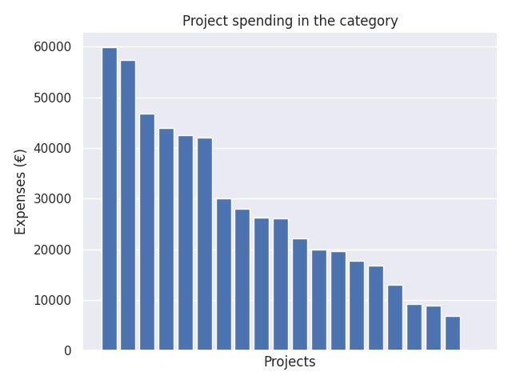

Esi- ja perusopetuksen tietoverkkojen hankinnat
Category summary
26.9K spent on average
59.8K highest spending

Reports in the category
Joensuun kaupunki
Project name: LAVENNUS – Langattomien verkkojen laajennus projekti
59.8K spent
Kajaanin kaupunki
Project name: Kajaanin Tietosampo -langattomat verkot esiopetuksessa
57.4K spent
Tyrnävän kunta
Project name: Verkot kuntoon
46.7K spent
Siilinjärven kunta
Project name: Siilinjärven langattoman kouluverkko
44K spent
Siuntion kunta
Project name: Siuntion verkot
42.5K spent
Uudenkaupungin kaupunki
Project name: Esi - ja perusopetuksen tiet overkkojen hankinnat
42.1K spent
Karvian kunta
Project name: Esi- ja perusopetuksen tietoverkkojen hankinnat/ uusi yhtenäiskoulu
30K spent
Liedon kunta
Project name: TietoLieto
28K spent
Iisalmen kaupunki
Project name: Verkot vesille - Iisalmeen
26.3K spent
Mikkelin kaupunki / sivistystoimi
Project name: Digiloikka esiopetusta antavissa päiväkodeissa
26.1K spent
Hangö stad
Project name: Trådlösa skolor på udden
22.1K spent
Vörå kommun
Project name: Anskaffning av datanät för förskola och skola 2016-2018
20K spent
Rovaniemen Seudun Steiner-kouluyhdistys ry
Project name: Turvallinen ja toimiva lähiverkko opetustoiminnan tueksi
19.7K spent
Ilmajoen kunta
Project name: Ehjät verkot - kalaa tulee!
17.8K spent
Nokian kaupunki
Project name: InnoE-polku
16.9K spent
Ruskon kunta
Project name: Verkot kaikille
13K spent
Enontekiön kunta
Project name: Valokuitua tunturikouluun Kilpisjärvelle
9.16K spent
Kiteen kaupunki
Project name: Tvt -yhteisöllisyyden palvelijana
8.86K spent
Simon kunta
Project name: Digitalisaatio lähikouluperiaatteen turvana
6.83K spent
Asikkalan kunta
Project name: Langattoman opiskeluympäristön luominen koulun sisätiloihin
0 spent